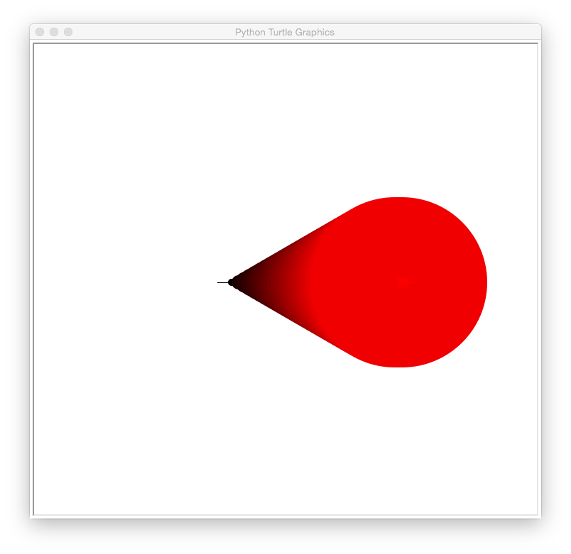
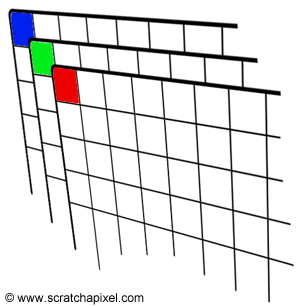

LAB 3
Today’s lab will focus on image files and colors in Python.
Software tools needed: web browser and Python IDLE programming environment.
In-class Quiz
During lab, there is a quiz. The password to access the quiz will be given during lab. To complete the quiz, log on to Blackboard (see Lab 1 for details on using Blackboard).
Using Python, Gradescope, and Blackboard
See Lab 1 for details on using Python, Gradescope, and Blackboard.
Colors
There are several different ways to specify colors. We will use colors:
- by name,
- by percentage,
- by absolute amount of color (`255’ mode), and
- by absolute amount of color (hexadecimal format).
Names for Colors
For common colors, you can give the name of the color, as a string. For example, run the program (click the triangle) to see two turtles, drawing in different colors:
There are more than 100 colors that we can use by name. Here are the ones available in most web browsers and Python turtle packages:
Some are obvious, like (“red” or “blue”), others are a bit more obscure (like “mediumorchid” or “chartreuse”). What color is “mediumorchid”? Change the color of one of the turtles in the coding window above to find out. Add in a new turtle and make it your favorite color. Draw a few lines to demonstrate its color.
Colors by Decimals
As we saw above, the turtle package recognizes many common colors by name. If your favorite color is not on that list, you can make a new color by specifying how much of the red, green, and blue (‘RGB’) light intensity you would like. The range for each is from 0 (no light) to 255 (100% light). For example, if all the light intensities are 255 (100% of the possible), then the color is white.
Read the code below and guess what color each turtle is. Check your guess by running the program:
Let’s look at some of the shades of red that are available. Here’s our plan (or pseudocode):
- Create a turtle, tess.
- For 10, 20, 30, …, 250,
- Move forward 10 steps
- Make the turtle a bit larger each time
- Make the turtle a bit more red each time
Let’s change each piece of our “To Do” list into Python code:
-
Create a turtle, tess.
We’ve done this before. We import the turtle module and set up the turtle. One new thing we need to do, is to tell the turtle library that we would like to represent colors as decimal numbers:
#A program that demonstrates the shades of red
import turtle #Import the turtle drawing package
turtle.colormode(255) #Allows colors to be given as 0…255 tess = turtle.Turtle() #Create a turtle
To keep our drawing from running off the screen, we’ll move tess backwards before we start our loop:
tess.backward(100) #Move her backwards, to give more space to draw -
For 10, 20, 30, …, 250,
This can be done with a for-loop and a range that starts at 10, stops at 255, and steps up by 10 each time:
for i in range(0,255,10): -
Move forward 10 steps
tess.forward(10) #Move forward -
Make the turtle a bit larger each time
tess.pensize(i) #Set the drawing size to be i (larger each time) -
Make the turtle a bit more red each time
tess.color(i,0,0) #Set the red channel to be i (brighter each time)
Here’s the whole program altogether. Copy it over to an idle file window and try running it:
#A program that demonstrates the shades of red
import turtle #Import the turtle drawing package
turtle.colormode(255) #Allows colors to be given as 0...255
tess = turtle.Turtle() #Create a turtle
tess.shape("turtle") #Make it turtle shaped
tess.backward(100) #Move her backwards, to give more space to draw
#For 0,10,20,...,250
for i in range(0,255,10):
tess.forward(10) #Move forward
tess.pensize(i) #Set the drawing size to be i (larger each time)
tess.color(i,0,0) #Set the red channel to be i (brighter each time)
The resulting graphics window is:

How would you show shades of green? When you have figured out the answer, see the Programming Problem List.
Colors by Hexadecimal
A common way to represent colors is using hexadecimal numbers. Our traditional decimal, or base-10 numbers, use 10 symbols for each digit: 0, 1, 2, 3, …, 9. Hexadecimal, or base-16 numbers, use 16 symbols. In addition to 0, 1, 2, …, 9, the letters A, B, C, D, E, and F are also used.
A good way to think about it is to think about what the world would be like if everyone had 8 fingers on each hand, instead of 5. When we count, on 10 fingers, we can use the symbols 0, 1, 2, …, 9 to label each finger:

(from
i-programmer.info)
Doing the same for 16 fingers, we use 0, 1, 2, …, 9, and then A, B, …, E when we run out of the normal symbols for numbers:

(from
i-programmer.info)
The first 9 numbers are the same in both decimal and hexadecimal, but larger numbers are different. For example, counting to 10 on our 8-fingered hands gives the symbol A. So, the decimal number 10 is the single digit hexadecimal number, A.
Going in the other direction, the hexadecimal number 11, is counting through all the (8-fingered hands) fingers (16) plus one more, yielding 17.
Why does this matter? Our color values range in decimal from 0 to 255. If we write these in hexadecimal, the range is 0 to FF. FF is the largest two-digit hexadecimal number, so, this range of values fits perfectly in two-digit hexadecimal numbers. Triples of these hexadecimal values are an extremely common way to represent colors.
For example, here are some shades of blue, given with their name and hexadecimal value:
The leading hash sign (‘#’) is used to indicate that this is a hexadecimal number:
- The next two digits are for the amount of red.
- The middle two digits are for the amount of green.
- The last two digits are for the amount of blue.
The first color on the list has 00 or 0% red, 00 or 0% green, and 00 or 0% red, and represents the color black. These shades of blue all have no red (first two digits are 00) and no green (middle two digits are 00). By varying the values of the last two digits, we have a dark, navy blue (80 in the last two digits) to a bright blue (FF in the last two digits).
We can set the color of turtles using hexcodes. For example, to create a turtle, named thea, and set her color to the medium blue (using the hex code from the above list), we can:
import turtle
thea = turtle.Turtle()
thea.shape("turtle")
thea.color("#0000CD")
producing a graphics window with:
The code above always produces a medium blue turtle. How would you modify the program to let the user specify a hex code for the color of the turtle? When you have figured out the answer, see the Programming Problem List.
Files & Command Line Interface (Basic Intro)
If you own a windows machine download and install git bash to be able to follow along, otherwise you may use the terminal application available on your Mac system.
The terminal has its own set of commands (separate from Python) that we can use to communicate with the operating system. It’s often called the command line interface or shell. It predates the graphical interface that is now available and is incredibly useful for automating tasks and working on remote servers. We will slowly introduce shell commands over the course of the semester and eventually incorporate them into some programming assignments.
When you type:
idle3
or
idle
you are asking the operating system to launch the program idle3. The laptop was configured to first look in folders containing applications, and then to check your home folder, and then to check the current folder you are using to find an application by that name.
Let’s create a new directory, or folder, to hold your images (using the shell or command line). Where it says thomasH below, replace with your name. It is easier if you avoid spaces in the names:
- Open a new terminal window (go to the upper left menu icon, search for terminal and click, or if you already have terminal, you can click on its menu to create a new window).
-
In the terminal window, type:
pwdThis tell you the path, or location, of your current working directory. To see what is in the folder, you request a ‘listing’:
ls -
To add a new directory, we type:
mkdir thomasH(replace thomasH with your name to create a directory for you!).
Now, when we list the current directory, we should new item (namely the directory with your name):
ls -
Let’s change directories:
cd thomasHIf we ask for a listing (ls), we will now see the contents of your directory.
The graphical interface and shell are operating on the same underlying system, so, changes you make with one can be seen by the other. If you open up the file icon (on left hand menu bar) and click the Home directory, you will see the folder you just created.
In the next lab, we will explain how to copy and move files between directories.
Images
There are many different formats to store images. Some store the information about the color of every pixel (“picture element” or dot on the screen). Others store end points of lines or boundaries of regions and the colors of each. We focus on the former, and in particular, use the png (portable network graphics) file format, which is popular for storing images captured from cameras and is `lossless’ (every pixel captured is stored, so, can also be quite large).
The textbook has a lovely visualization and explanation:

To specify a given pixel, you give its row, r, and column, c, in the grid. Counting from the upper left hand corner which has index 0,0. This is unlike standard Cartesian (math) coordinates but echos how matrices are often accessed.
 Each pixel is represented by its the percentage of red, green, and blue (“RGB”) values. Images are stored as a grid of red values, a grid of green values, and a grid of blue values.
For example, if we stored our image in the variable,
img, we could
access the red value by:
print "Upper left has red:", img[0,0,0]
and the amount of green:
print "Upper left has green:", img[0,0,1]
and the amount of blue:
print "Upper left has blue:", img[0,0,2]
Any point can be accessed via its coordinates (i,j) and the color channel (0 for red, 1 for green, and 2 for blue). In our example above, with the picture stored in the variable, img:
img[r,c,chan]
where the r is the row and c is the column of the pixel and chan is the
color channel (0 for red, 1 for green, and 2 for blue). Note that when
we are accessing parts of our images, we use the square brackets (‘[’
and ‘]’), just as we did for lists. The round parenthesis (‘(‘ and ‘)’)
are used for functions (like
print() and
right()).
Let’s write a program that manipulates an image. Read through the code first, and then try on your computer. What does it do? Note: this program assumes that you have a file called csBridge.png in the same directory. You can use that file, or substitute one of your own.
{kind=link}
#Name: CSci 127 Teaching Staff
#Date: Fall 2021
#This program loads an image, displays it, and then creates, displays,
# and saves a new image that has only the red channel displayed.
#Import the packages for images and arrays:
import matplotlib.pyplot as plt
import numpy as np
img = plt.imread('csBridge.png') #Read in image from csBridge.png
plt.imshow(img) #Load image into pyplot
plt.show() #Show the image (waits until closed to continue)
img2 = img.copy() #make a copy of our image
img2[:,:,1] = 0 #Set the green channel to 0
img2[:,:,2] = 0 #Set the blue channel to 0
plt.imshow(img2) #Load our new image into pyplot
plt.show() #Show the image (waits until closed to continue)
plt.imsave('reds.png', img2) #Save the image we created to the file: reds.png
The code above always produces an image with only the red channel displayed. How would you modify the program to display only the green channel? When you have figured out the answer, see the Programming Problem List.
What’s Next?
If you finish the lab early, now is a great time to get a head start on the programming problems due early next week. There’s instructors to help you, and you already have Python up and running. The Programming Problem List has problem descriptions, suggested reading, and due dates next to each problem.
Using Python on Your Computer
Today’s lab introduced several packages that are freely available but do not always come bundled with Python. If you are using anaconda, then most are included. See the directions below for other installations. (To install Python, see Lab 1 for directions as well as matplotlib installation if needed for more information)